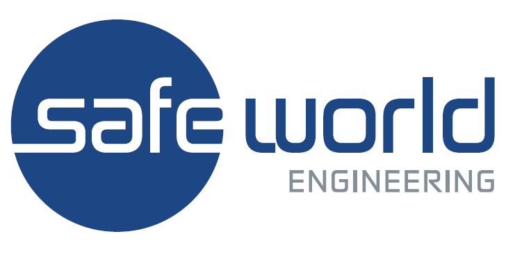

CE / EU
Machinery Directive 2006/42/EC
Machinery Regulation (EU) 2023/1230
EN 60204-1 · EN ISO 12100
I help industrial machinery and semiconductor equipment meet complex global safety and certification requirements.
My work focuses on translating technical standards into practical engineering solutions for industrial machinery and semiconductor manufacturing equipment.
Machinery Directive 2006/42/EC
Machinery Regulation (EU) 2023/1230
EN 60204-1 · EN ISO 12100
SEMI S2 · S6 · S8 · S22 · S23 · S30 · S47
UL 508A · NFPA 79 · UL 61010-1
Field Evaluation & Product Safety
ISO 13849-1
Safety PLC · Interlock · EMO
Risk Reduction
IEC 60079 · ATEX · IECEx
Purge & Pressurization
Intrinsic Safety
ISO 12100 methodology
Hazard identification
Risk reduction strategy

Global product safety certification and consulting for industrial machinery and semiconductor manufacturing equipment.
Product safety evaluation, certification and technical compliance experience across industrial equipment.
Selected technical work, safety engineering cases, certification topics and practical interpretations of international standards.
VIEW ALL WORK →Practical transition from the Machinery Directive to the new Machinery Regulation.
VIEW PROJECT → SEMISafety interlock, moving parts, EMO and functional safety evaluation for semiconductor equipment.
VIEW PROJECT → HAZLOCHazardous location protection using purged and pressurized electrical enclosures.
VIEW PROJECT → FUNCTIONAL SAFETYSafety PLC, guard monitoring and redundant safety control architecture.
VIEW PROJECT →Practical explanations of standards, certification requirements and engineering decisions.
Industrial machinery safety,
semiconductor equipment certification
and global compliance.